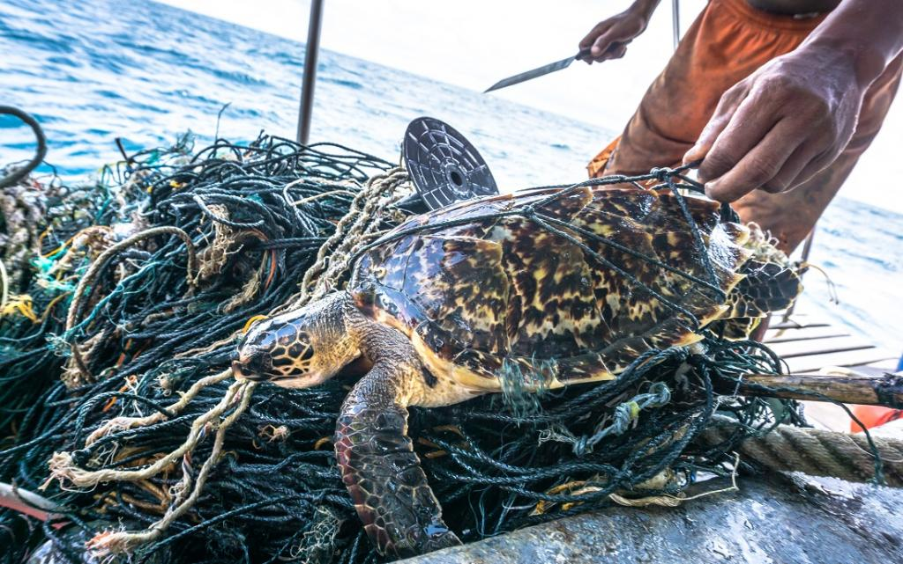
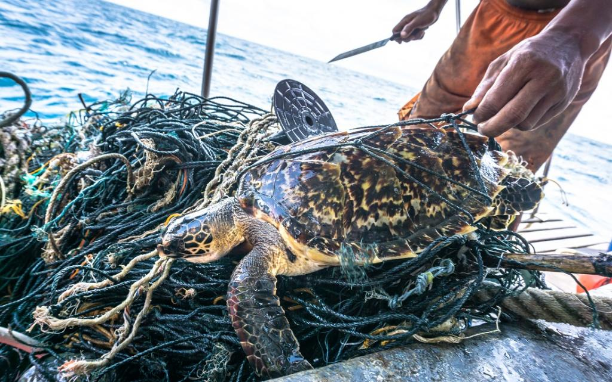
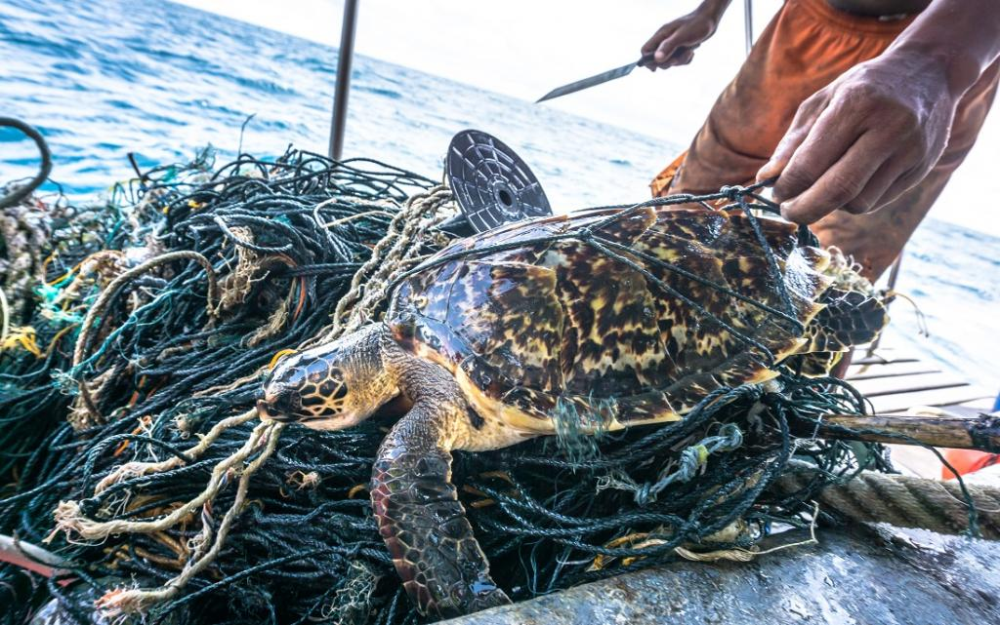

During their long lives, sea turtles swim thousands of kilometers between land and sea. They wait decades before reproducing, returning to the same beaches where they were hatched to lay their eggs. Females can lay hundreds of eggs in a single nesting season, but only a handful will eventually hatch and survive their first year. Aside from these substantial natural concerns, sea turtles confront plenty of human-caused hazards, including bycatch in commercial fishing gear, illegal trade, consumption, and climate change.
OVERHARVESTING AND ILLEGAL TRADE
Sea turtles continue to be harvested unsustainably both for human consumption and trade of their parts. Many people throughout the world rely on turtle meat and eggs for sustenance and revenue. Turtles are also killed for medicinal and religious rites by some people. Every year, tens of thousands of sea turtles are killed in this manner, decimating populations of already endangered green and hawksbill turtles. Turtle slaughter for both home and foreign markets continues. The Convention on International commerce in Endangered Species of Wild Fauna and Flora (CITES), a global agreement among nations to regulate or prohibit international commerce in threatened species, prohibits international trade in all sea turtle species and their components. Nonetheless, illegal trafficking continues.
Consequeces
Population loss. Because sea turtles are slow-growing and long-lived creatures, they are particularly vulnerable to overharvesting. When too many turtles are removed from the wild, their numbers can drastically collapse. The hawksbill sea turtle, for example, is currently critically endangered due to unlawful trading in its shell.
Overharvesting and illegal trading in sea turtles have significant and profound consequences. It is critical to take precautions to conserve these species and their habitats.
Preventions
Contributing to conservation initiatives. Many groups are striving to conserve sea turtles. You can help by contributing money, volunteering your time, or spreading the word about the significance of sea turtle conservation.
Making prudent decisions. When purchasing fish, look for goods that have been certified as sustainable. This will help you avoid funding fisheries that are harmful to sea turtles.
Educating others. Inform your friends, family, and neighborhood about the risks that sea turtles face. The greater the number of people who are aware of these risks, the more probable it is that we will take action to safeguard these species.
BYCATCH
Every year, hundreds of thousands of marine turtles are trapped in shrimp trawl nets, longline hooks, and fishing gill nets. They become fisheries' bycatch—animals accidentally caught in nets intended for other species.
Sea turtles must reach the surface to breathe, hence many drown when caught. The most serious threat to most sea turtles, particularly endangered loggerheads, greens, and leatherbacks, is accidental capture by fishing gear. As fishing activity grows, so does this hazard.
Consequeces
Death. Catching sea turtles in fishing gear can cause them to drown, suffocate, or be harmed. Even if they are freed, they may be damaged or debilitated, making them more vulnerable to illness and predators.
Injury. Sea turtles trapped in fishing gear can sustain injuries such as fractured bones, wounds, and lacerations. These injuries can make swimming, feeding, and reproduction difficult for turtles.
Migration patterns are being disrupted. Bycatch has the potential to affect sea turtle migration patterns. This makes it more difficult for turtles to obtain food and mates, and it also increases their chances of becoming entangled in fishing gear again.
Population has decreased. Bycatch poses a significant danger to sea turtle populations. Bycatch can diminish population numbers by up to 50% in some circumstances.
Preventions
Using turtle-friendly fishing gear. A variety of fishing gear modifications may be made to decrease sea turtle bycatch. These changes include the use of circle hooks instead of J-hooks, the use of turtle excluder devices (TEDs), and the use of lighter nets.
Educating fishermen. Fishermen may help reduce sea turtle bycatch significantly. We can assist fishermen safeguard sea turtles by teaching them about the value of sea turtles and the hazards of bycatch.
Supporting conservation organizations. Several groups are striving to decrease sea turtle bycatch. We can assist these groups in developing and implementing successful bycatch reduction strategies if we support them.

POLLUTION
Pollution is a significant hazard to sea turtles. It can have an effect on sea turtles at all phases of development, from eggs to hatchlings to juveniles to adults. Some of the most prevalent contaminants affecting sea turtles are:
Plastic pollution, oil spills, water contamination, and noise pollution pose significant threats to marine turtles. Turtles often mistake plastic waste for food, leading to intestinal obstructions and death. Oil spills coat their feathers and fur, hindering their swimming, temperature regulation, and breathing. Water pollution from runoff and waste disrupts their habitat and threatens their survival. Noise pollution impairs their communication and navigation, making it challenging to find food, mates, and nesting places. Urgent action is needed to protect these vulnerable creatures and their fragile marine environments.
Consequeces
Death. Pollution may kill sea turtles through a variety of mechanisms, including ingestion, entanglement, and poisoning.
Reduction in reproduction. Pollution can affect eggs, hatchlings, and adults, reducing sea turtle reproduction rates.
Loss of habitat. Sea turtle ecosystems can be harmed by pollution, making it harder for them to obtain food, nest, and rear their young.
Disease. Pollution can impair the immune systems of sea turtles, leaving them more prone to illness.
Preventions
Reduce, reuse, and recycle your waste. This can contribute to a reduction in the quantity of garbage that ends up in the environment.
Help groups that strive to conserve marine turtles. These groups are striving to prevent pollution and safeguard the habitats of sea turtles.
Educate people on the importance of sea turtle conservation. The more people who are aware of the hazards to sea turtles, the more probable it is that we will act to protect them.
CONSUMPTION OF TURTLE EGGS & MEAT
Sea turtle populations are seriously threatened by the eating of turtle flesh and eggs. The illicit traffic in sea turtle eggs and flesh is a significant contributor to the decrease of all seven species, which are all classified as vulnerable or endangered.
Some cultures consider sea turtle eggs to be a delicacy, and they frequently gather them for their alleged sexual effects. However, these statements are not backed by any scientific data. Eating sea turtle eggs can really be harmful. They might be infected with poisons from pollution, dangerous germs, and parasites.
In other cultures, sea turtle flesh is regarded as a delicacy as well. But it also contains a lot of mercury and other contaminants.. Eating sea turtle meat can lead to health problems, including neurological damage, kidney disease, and cancer.
Consequeces
Harm to sea turtle populations: Sea turtles are already threatened or endangered, and the consumption of their eggs and meat is a major factor in their decline.
Health risks to humans: Turtle eggs and meat can contain harmful bacteria, parasites, and toxins. Eating these products can lead to food poisoning, parasitic infections, mercury poisoning, and other health problems.
Support for illegal wildlife trade: The consumption of turtle eggs and meat often involves the illegal trade in wildlife. This trade is a major source of income for criminal organizations and can lead to the exploitation of other wildlife species.
Loss of cultural heritage: The consumption of turtle eggs and meat is sometimes part of a cultural tradition. However, the continued consumption of these products can lead to the loss of this cultural heritage.
Preventions
Education: It is important to educate people about the dangers of consuming turtle eggs and meat. This can be done through public awareness campaigns, school programs, and other initiatives.
Enforcement of laws: In many countries, the consumption of turtle eggs and meat is illegal. It is important to enforce these laws to deter people from consuming these products.
Support for conservation efforts: There are a number of organizations working to conserve sea turtles. By supporting these organizations, you can help to protect sea turtle populations and prevent the consumption of their eggs and meat.
To visit our webpages and learn more about our conservation projects, please click the buttons below for Kosgoda and Bentota. Explore the efforts being made to protect sea turtles in these regions and discover the unique challenges they face :
 
